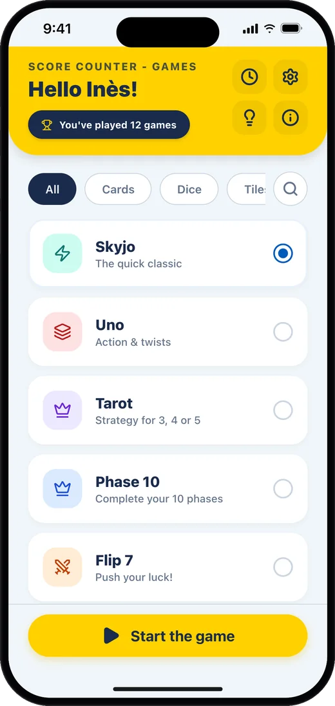
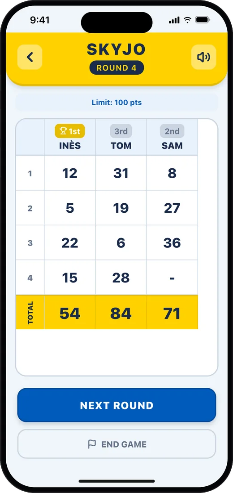
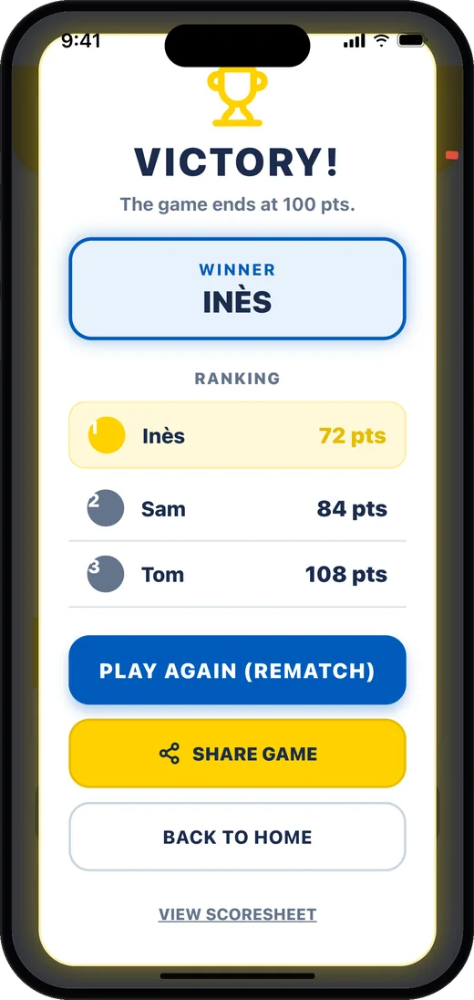

No more scribbles, let's play
Add your players and enter each round's points: the app does the math and shows the live ranking. No more score sheets lost under the table or adding mistakes.
Each game has its own entry screen. In French Tarot the app works out bids, oudlers and handfuls; in Yams it keeps the full score sheet.
A game of Skyjo in the app



7 games in one app
- Skyjo: points for each round, with an adjustable end-of-game limit.
- French Tarot: bids, oudlers, Petit au bout, handfuls and Chelem worked out for 3, 4 or 5 players.
- Yams (Yatzy): the full score sheet: three and four of a kind, full house, straights, Yams, chance and bonus.
- Flip 7: number cards, bonus cards and multipliers; the Flip 7 bonus is added automatically.
- Uno: the points of the cards left in hand after each round.
- Phase 10: each player's phase and penalty points.
- Qwirkle: points for every turn, Qwirkles included.
Also included
- Live ranking after every round
- Resume a game in progress at any time
- History of all your games
- Share the results as an image
- Scores read out loud
- Available in 7 languages
How it works
- Pick your game. Start a game in one tap and add the players around the table.
- Score every round. Enter everyone's points in seconds; for several games, the app does the math for you.
- Crown the winner. The ranking updates live and the app announces the winner at the end.
Frequently asked questions
Is the app free?
Yes, it's free with ads. A "No Ads" option is available as an in-app purchase (1 year, 1 year with support, or lifetime).
Do I need an internet connection?
Not to keep score: your games are saved on your phone. Ads need a connection to show.
How does the app decide who wins?
It follows the rules of the game you picked: in Skyjo the lowest total wins, in Uno or Qwirkle the highest does.
My favourite game is missing
Suggest it from the app or email me: new games are added regularly.
Rules and demo for every game
Quick rules, how points are counted and an interactive demo of the app for each game are on compteurpoints.com.
Contact us
A question, a bug, a game to add?
Email labasquelucas@gmail.com
Unofficial app, not affiliated with the publishers of the games mentioned.